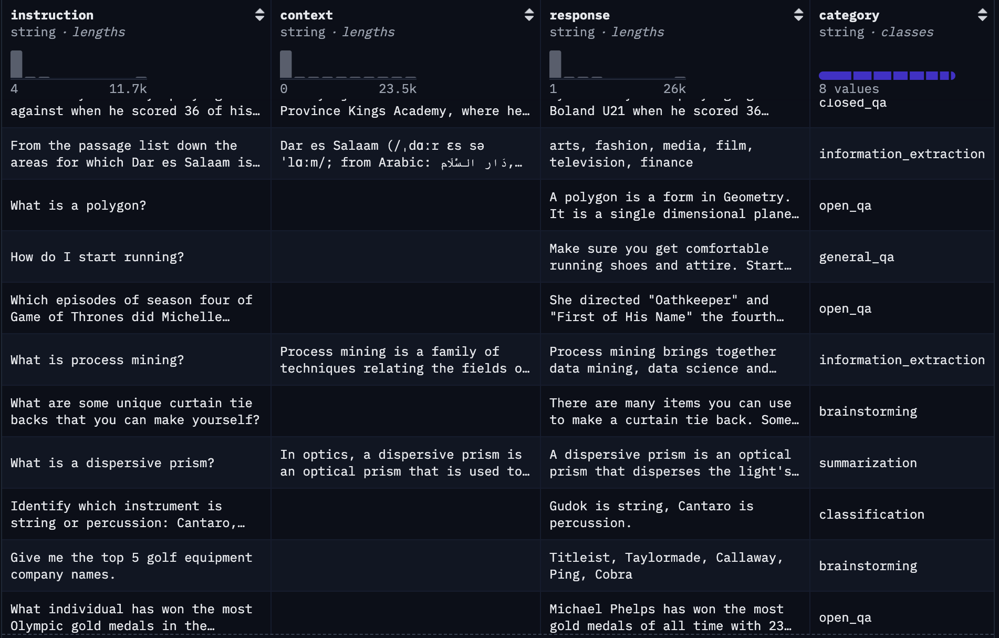

Project Goal:
Fine-tune a base LLama model (TinyLlama 1.1B) to follow human-written instructions. This aims to enhance the model's ability to generate contextually appropriate responses based on given prompts.
Dataset:
The Dolly 15K dataset (https://huggingface.co/datasets/databricks/databricks-dolly-15k) comprises 15,000 high-quality, human-generated instruction-response pairs. Fine-tuning on dataset enables the model to better understand and execute a variety of instructions, ranging from question-answering to summarization. See instruction data examples below.
Relevant Literature & Resources
- LoRA: Low-Rank Adaptation of Large Language Models - "We propose Low-Rank Adaptation, or LoRA, which freezes the pre-trained model weights and injects trainable rank decomposition matrices into each layer of the Transformer architecture, greatly reducing the number of trainable parameters for downstream tasks" - https://arxiv.org/abs/2106.09685
- Finetuning LLMs using LoRA - "LoRA is an improved finetuning method where instead of finetuning all the weights that constitute the weight matrix (W) of the pre-trained large language model, two smaller matrices (A and B) that approximate the update to the matrix are fine-tuned." - https://anirbansen2709.medium.com/finetuning-llms-using-lora-77fb02cbbc48
Modeling Approach:
- Used LORA (Low-Rank Adaptation) to limit the parameters fine-tuned and prevent catasrophic forgetting
- Utilized Unsloth to facilitate LoRA fine tuning with low memory availability
- Generated responses for a set of test instructions using both the pre-trained and fine-tuned models to evaluate results
Example Results:
- Prompt: Explain photosynthesis.
- Response Prior to Fine Tuning: "The most popular television film of the year is "The Adventorist" by the British Film Academy. "The most popular television film of the year is "The Adventorist" by the British Film Audience. "The most popular television film of the year is "The Adventorist" by the British Film Audience. "The most popular television film of the year is "The Adventorist" by the British Film Audience. "The most popular television film
- Response After Fine Tuning: Photosynthesis is the process by which plants and other organisms convert carbon dioxide into glucose (sugar) using sunlight as energy. It is a complex process that involves the conversion of carbon dioxide into glucose through the production of ATP (adenosine triphosphate) and NADPH (nicotinamide adenine dinucleotide phosphate). The process begins with the absorption of carbon dioxide by the plant through the leaves. The absorbed carbon dioxide is then converted into glucose through the process of photosynthesis. The glucose is then used by the plant to produce energy through the process of ...
- Prompt: Classify the following sentence as Positive or Negative sentiment: “I loved the customer service!”
- Response Prior to Fine Tuning: ”"""""""""""""""""""""""""""""""""""""""""""""""""""""""""""""""""""""""""""""""""""""""""""""""""""
- Response After Fine Tuning: Positive sentiment
- Prompt: Pretend you're a travel agent. Recommend a weekend getaway in the US for someone who loves hiking.
- Response Prior to Fine Tuning: Re: S:: S::: S::: S::: ...
- Response After Fine Tuning: Of course! Here are some weekend getaway options in the US for someone who loves hiking: 1. Yosemite National Park, California: This park is known for its stunning natural beauty and hiking trails. It's a great place to explore the great outdoors and enjoy some fresh air. 2. Grand Canyon National Park, Arizona: This park is a must-visit destination for anyone who loves hiking. The park offers a variety of hiking trails, including the famous Bright Angel Trail. 3. Zion National Park, Utah: This park is known for its stunning natural beauty and hiking.
- Prompt: Compare the benefits of solar vs. wind energy.
- Response Prior to Fine Tuning: -
- Response After Fine Tuning: Solar energy is a renewable energy source that produces electricity without relying on fossil fuels. It is a clean and sustainable energy source that does not produce greenhouse gases or pollution. Solar energy is a reliable and consistent source of energy that can be used to power homes, businesses, and industries. Wind energy is a non-renewable energy source that produces electricity only when the wind blows. It is a variable source of energy that can be affected by weather conditions. Solar energy is a more efficient and cost-effective source of energy compared to wind energy. Solar energy is more cost-effective than wind energy because it does not require expensive infrastructure such as ...
Highlighted Code Sections:
import transformers
from unsloth import FastLanguageModel
from trl import SFTTrainer
from transformers import AutoModelForCausalLM, AutoTokenizer
from datasets import DatasetDict
import pandas as pd
import numpy as np
import torch
from torch.utils.data import Dataset
from tqdm import tqdm
from datasets import load_dataset
from torch.utils.data import DataLoader
from functools import partial
from unsloth import FastLanguageModel
# Dataset Preparation
dataset = load_dataset("databricks/databricks-dolly-15k")
def format_dolly(example):
if example['context']:
prompt = f"### Instruction:\n{example['instruction']}\n\n### Context:\n{example['context']}"
else:
prompt = f"### Instruction:\n{example['instruction']}"
return {
"prompt": prompt,
"output": example["response"]
}
formatted_dataset = dataset["train"].map(format_dolly, remove_columns=dataset["train"].column_names)
formatted_dataset = formatted_dataset.shuffle(seed=42)
train_val_test = formatted_dataset.train_test_split(test_size=0.2, seed=42)
val_test = train_val_test['test'].train_test_split(test_size=0.5, seed=42)
split_dataset = DatasetDict({
'train': train_val_test['train'],
'validation': val_test['train'],
'test': val_test['test']
})
model, tokenizer = FastLanguageModel.from_pretrained(
model_name = "TinyLlama/TinyLlama-1.1B-Chat-v1.0",
max_seq_length = 2048,
dtype = None,
load_in_4bit = True
)
# Add LoRA adapter to enable fine-tuning
model = FastLanguageModel.get_peft_model(
model,
r=16,
lora_alpha=32,
lora_dropout=0.05,
bias="none"
)
def to_text(example):
return {"text": f"{example['prompt']}\n{example['output']}"}
def tokenize(example):
tokenized = tokenizer(
example["text"],
truncation=True,
padding="max_length",
max_length=2048,
)
tokenized["labels"] = tokenized["input_ids"].copy()
return tokenized
train_data = small_dataset["train"].map(to_text)
tokenized_train = train_data.map(tokenize, remove_columns=train_data.column_names)
val_data = small_dataset["validation"].map(to_text)
tokenized_val = val_data.map(tokenize, remove_columns=val_data.column_names)